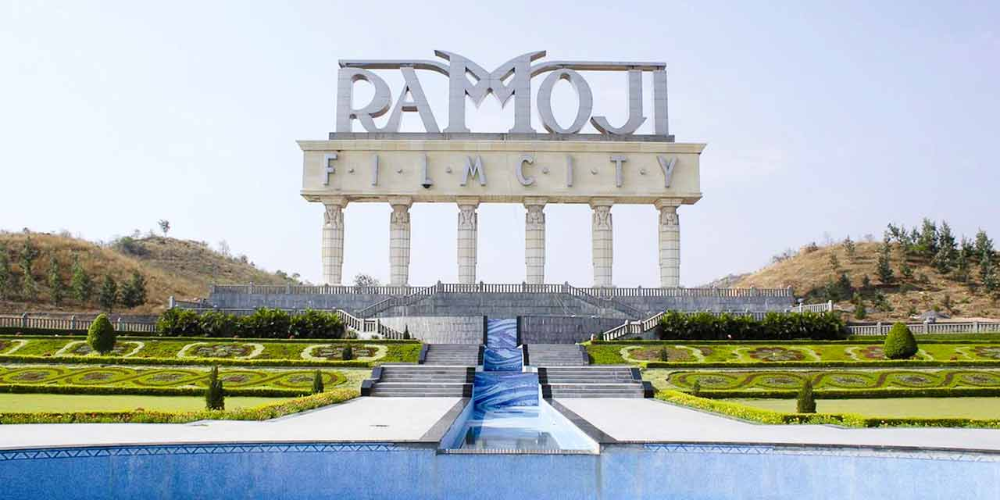

Ramoji Film City
Ramoji Film City is the world’s largest integrated film city and India's only thematic holiday destination with magic of cinema. Located in Hyderabad, Telangana, it is a popular tourist attraction offering various entertainment options.
Location: Anaspur Village, Hayathnagar Mandal, Hyderabad, Telangana, India
Ticket Price: Starting from INR 1250 for adults, INR 1050 for children (varies by package)
Transportation: Accessible by road, well-connected by local buses, taxis, and private vehicles.